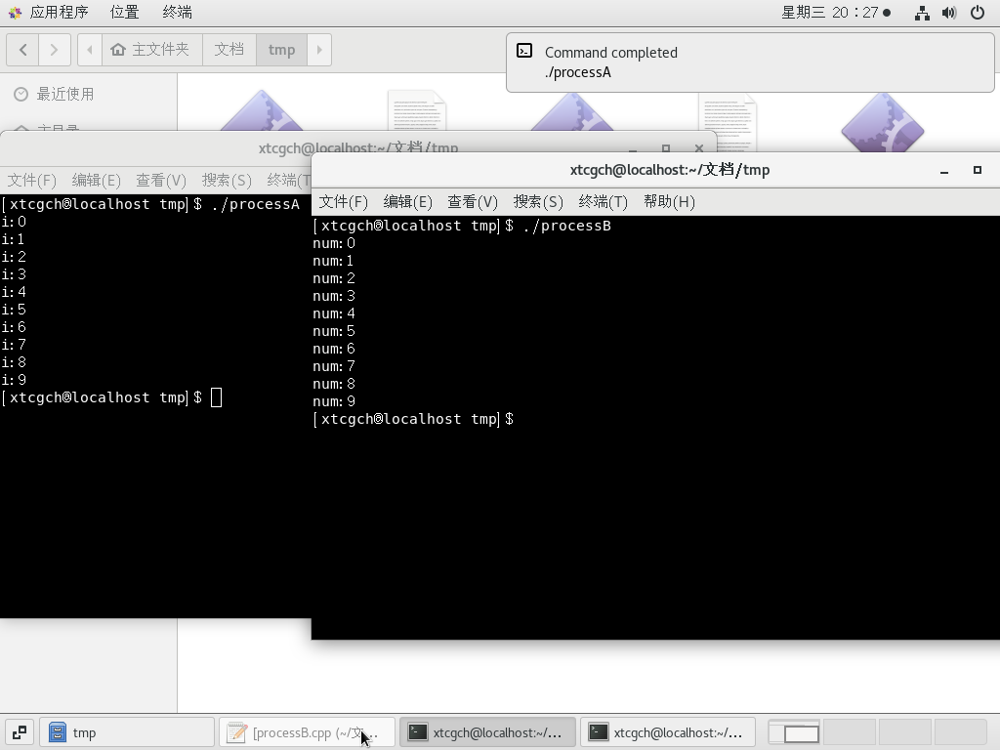
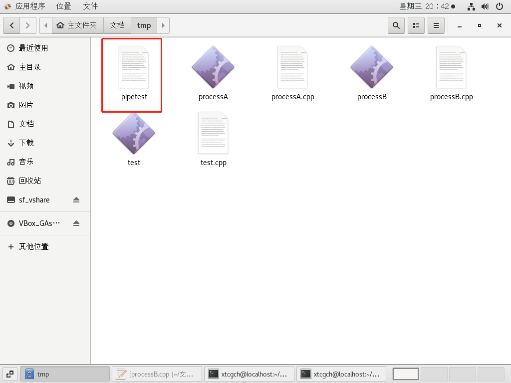

<!DOCTYPE HTML>
<html lang="zh-CN">
<head><meta name="generator" content="Hexo 3.8.0">
    <!--Setting-->
    <meta charset="UTF-8">
    <meta name="viewport" content="width=device-width, user-scalable=no, initial-scale=1.0, maximum-scale=1.0, minimum-scale=1.0">
    <meta http-equiv="X-UA-Compatible" content="IE=Edge,chrome=1">
    <meta http-equiv="Cache-Control" content="no-siteapp">
    <meta http-equiv="Cache-Control" content="no-transform">
    <meta name="renderer" content="webkit|ie-comp|ie-stand">
    <meta name="apple-mobile-web-app-capable" content="我的博客 - blog">
    <meta name="apple-mobile-web-app-status-bar-style" content="black">
    <meta name="format-detection" content="telephone=no,email=no,adress=no">
    <meta name="browsermode" content="application">
    <meta name="screen-orientation" content="portrait">
    <link rel="dns-prefetch" href="https://lives.xtcgch.ink">
    <!--SEO-->

<meta name="description" content="脑容量不够，笔记来凑">


<meta name="robots" content="all">
<meta name="google" content="all">
<meta name="googlebot" content="all">
<meta name="verify" content="all">
    <!--Title-->


<title>【代码】管道使用例子 | 我的博客 - blog</title>


    <link rel="alternate" href="/atom.xml" title="我的博客 - blog" type="application/atom+xml">


    <link rel="icon" href="https://blog.xtcgch.ink/img/background/海绵宝宝.ico">

    


<link rel="stylesheet" href="/css/bootstrap.min.css?rev=3.3.7">
<link rel="stylesheet" href="/css/font-awesome.min.css?rev=4.5.0">
<link rel="stylesheet" href="/css/style.css?rev=@@hash">


    


    

</head>

</html>
<!--[if lte IE 8]>
<style>
    html{ font-size: 1em }
</style>
<![endif]-->
<!--[if lte IE 9]>
<div style="ie">你使用的浏览器版本过低，为了你更好的阅读体验，请更新浏览器的版本或者使用其他现代浏览器，比如Chrome、Firefox、Safari等。</div>
<![endif]-->

<body>
    <header class="main-header" style="background-image:url(https://blog.xtcgch.ink/img/head-bg.jpg)">
    <div class="main-header-box">
        <a class="header-avatar" href="/" title="unistd68">
            
        </a>
        <div class="branding">
        	<!--<h2 class="text-hide">Snippet主题,从未如此简单有趣</h2>-->
            
                <h2> 脑容量不够，笔记来凑 </h2>
            
    	</div>
    </div>
</header>
    <nav class="main-navigation">
    <div class="container">
        <div class="row">
            <div class="col-sm-12">
                <div class="navbar-header"><span class="nav-toggle-button collapsed pull-right" data-toggle="collapse" data-target="#main-menu" id="mnav">
                    <span class="sr-only"></span>
                        <i class="fa fa-bars"></i>
                    </span>
                    <a class="navbar-brand" href="https://lives.xtcgch.ink">我的博客 - blog</a>
                </div>
                <div class="collapse navbar-collapse" id="main-menu">
                    <ul class="menu">
                        
                            <li role="presentation" class="text-center">
                                <a href="https://blog.xtcgch.ink/"><i class="fa "></i>主页</a>
                            </li>
                        
                            <li role="presentation" class="text-center">
                                <a href="https://blog.xtcgch.ink/categories/原理/"><i class="fa "></i>原理</a>
                            </li>
                        
                            <li role="presentation" class="text-center">
                                <a href="https://blog.xtcgch.ink/categories/代码/"><i class="fa "></i>代码</a>
                            </li>
                        
                            <li role="presentation" class="text-center">
                                <a href="https://blog.xtcgch.ink/categories/开源/"><i class="fa "></i>开源</a>
                            </li>
                        
                            <li role="presentation" class="text-center">
                                <a href="https://blog.xtcgch.ink/categories/面试/"><i class="fa "></i>面试</a>
                            </li>
                        
                            <li role="presentation" class="text-center">
                                <a href="https://blog.xtcgch.ink/categories/其他/"><i class="fa "></i>其他</a>
                            </li>
                        
                            <li role="presentation" class="text-center">
                                <a href="https://blog.xtcgch.ink/archives/"><i class="fa "></i>时间轴</a>
                            </li>
                        
                    </ul>
                </div>
            </div>
        </div>
    </div>
</nav>
    <section class="content-wrap">
        <div class="container">
            <div class="row">
                <main class="col-md-8 main-content m-post">
                    <p id="process"></p>
<article class="post">
    <div class="post-head">
        <h1 id="【代码】管道使用例子">
            
	            【代码】管道使用例子
            
        </h1>
        <div class="post-meta">
    
    
    <span class="categories-meta fa-wrap">
        <i class="fa fa-folder-open-o"></i>
        <a href="https://blog.xtcgch.ink/categories/代码">
            代码
        </a>
    </span>
    

    
    <span class="fa-wrap">
        <i class="fa fa-tags"></i>
        <span class="tags-meta">
            
                
                    <a href="https://blog.xtcgch.ink/tags/管道" title="管道">
                        管道
                    </a>
                
                    <a href="https://blog.xtcgch.ink/tags/POSIX" title="POSIX">
                        POSIX
                    </a>
                
            
        </span>
    </span>
    

    
        
        <span class="fa-wrap">
            <i class="fa fa-clock-o"></i>
            <span class="date-meta">2019/01/18</span>
        </span>
        
    
</div>

            
            
            <p class="fa fa-exclamation-triangle warning">
                本文于<strong>988</strong>天之前发表，文中内容可能已经过时。
            </p>
        
    </div>
    
    <div class="post-body post-content">
        <p><strong>摘要：</strong>本文是匿名管道和命名管道在CentOS7下的使用例子。</p>
<a id="more"></a>
<hr>
<h2 id="匿名管道的使用"><a href="#匿名管道的使用" class="headerlink" title="匿名管道的使用"></a><table><tr><td bgcolor="#C7C7C7">匿名管道的使用</td></tr></table></h2><figure class="highlight plain"><table><tr><td class="gutter"><pre><span class="line">1</span><br><span class="line">2</span><br><span class="line">3</span><br><span class="line">4</span><br><span class="line">5</span><br><span class="line">6</span><br><span class="line">7</span><br><span class="line">8</span><br><span class="line">9</span><br><span class="line">10</span><br><span class="line">11</span><br><span class="line">12</span><br><span class="line">13</span><br><span class="line">14</span><br><span class="line">15</span><br><span class="line">16</span><br><span class="line">17</span><br><span class="line">18</span><br><span class="line">19</span><br><span class="line">20</span><br><span class="line">21</span><br><span class="line">22</span><br><span class="line">23</span><br><span class="line">24</span><br><span class="line">25</span><br><span class="line">26</span><br><span class="line">27</span><br><span class="line">28</span><br><span class="line">29</span><br><span class="line">30</span><br><span class="line">31</span><br><span class="line">32</span><br><span class="line">33</span><br><span class="line">34</span><br><span class="line">35</span><br><span class="line">36</span><br><span class="line">37</span><br></pre></td><td class="code"><pre><span class="line">#include &lt;stdlib.h&gt;</span><br><span class="line">#include &lt;unistd.h&gt;</span><br><span class="line">#define MAXLINE 1024</span><br><span class="line"></span><br><span class="line">int main(void)</span><br><span class="line">&#123;</span><br><span class="line">    int n;</span><br><span class="line">    int fd[2];</span><br><span class="line">    pid_t pid;</span><br><span class="line">    char line[MAXLINE];</span><br><span class="line"></span><br><span class="line">    if (pipe(fd) &lt; 0) </span><br><span class="line">    &#123;</span><br><span class="line">        perror(&quot;pipe&quot;);</span><br><span class="line">        exit(1);</span><br><span class="line">    &#125;</span><br><span class="line"></span><br><span class="line">    pid = fork();</span><br><span class="line">    if (pid &lt; 0) </span><br><span class="line">    &#123;</span><br><span class="line">        perror(&quot;fork&quot;);</span><br><span class="line">        exit(1);</span><br><span class="line">    &#125;</span><br><span class="line">    else if (pid &gt; 0)   /* parent */</span><br><span class="line">    &#123; </span><br><span class="line">        close(fd[0]);   // 关闭读端</span><br><span class="line">        write(fd[1], &quot;hello world\n&quot;, 12);</span><br><span class="line">    &#125; </span><br><span class="line">    else                /* child */</span><br><span class="line">    &#123;       </span><br><span class="line">        close(fd[1]);   // 关闭写端</span><br><span class="line">        n = read(fd[0], line, MAXLINE);</span><br><span class="line">        write(STDOUT_FILENO, line, n);</span><br><span class="line">    &#125;</span><br><span class="line"></span><br><span class="line">    return 0;</span><br><span class="line">&#125;</span><br></pre></td></tr></table></figure>
<h2 id="命名管道的使用"><a href="#命名管道的使用" class="headerlink" title="命名管道的使用"></a><table><tr><td bgcolor="#C7C7C7">命名管道的使用</td></tr></table></h2><p>进程A创建管道(mkfifo) -&gt; 进程A写打开管道(open) -&gt; 进程B读打开管道(open) -&gt; 进程A开始往管道里写数据(write) </p>
<p>-&gt; 进程B从管道中读数据(read) -&gt; 进程A关闭管道(close) -&gt; 进程B关闭管道(close) -&gt; 删除管道(unlink)</p>
<p>进程A：<br><figure class="highlight plain"><table><tr><td class="gutter"><pre><span class="line">1</span><br><span class="line">2</span><br><span class="line">3</span><br><span class="line">4</span><br><span class="line">5</span><br><span class="line">6</span><br><span class="line">7</span><br><span class="line">8</span><br><span class="line">9</span><br><span class="line">10</span><br><span class="line">11</span><br><span class="line">12</span><br><span class="line">13</span><br><span class="line">14</span><br><span class="line">15</span><br><span class="line">16</span><br><span class="line">17</span><br><span class="line">18</span><br><span class="line">19</span><br><span class="line">20</span><br><span class="line">21</span><br><span class="line">22</span><br><span class="line">23</span><br><span class="line">24</span><br><span class="line">25</span><br><span class="line">26</span><br><span class="line">27</span><br><span class="line">28</span><br><span class="line">29</span><br><span class="line">30</span><br><span class="line">31</span><br><span class="line">32</span><br><span class="line">33</span><br><span class="line">34</span><br><span class="line">35</span><br><span class="line">36</span><br><span class="line">37</span><br><span class="line">38</span><br><span class="line">39</span><br><span class="line">40</span><br><span class="line">41</span><br><span class="line">42</span><br><span class="line">43</span><br><span class="line">44</span><br><span class="line">45</span><br><span class="line">46</span><br><span class="line">47</span><br><span class="line">48</span><br><span class="line">49</span><br><span class="line">50</span><br><span class="line">51</span><br><span class="line">52</span><br><span class="line">53</span><br><span class="line">54</span><br><span class="line">55</span><br><span class="line">56</span><br></pre></td><td class="code"><pre><span class="line">#include&lt;sys/stat.h&gt;</span><br><span class="line">#include&lt;fcntl.h&gt;</span><br><span class="line">#include&lt;iostream&gt;</span><br><span class="line">#include&lt;cstdlib&gt;</span><br><span class="line">#include&lt;cstring&gt;</span><br><span class="line">#include&lt;unistd.h&gt;</span><br><span class="line"></span><br><span class="line">using namespace std;</span><br><span class="line"></span><br><span class="line">#define PIPENAME &quot;pipetest&quot;</span><br><span class="line"></span><br><span class="line">const int open_mode = O_WRONLY;</span><br><span class="line"></span><br><span class="line">int main()</span><br><span class="line">&#123;</span><br><span class="line">    int ret = 0;</span><br><span class="line">    if(access(PIPENAME, F_OK) == -1)</span><br><span class="line">    &#123;</span><br><span class="line">        //PIPENAME文件描述符不存在,则创建</span><br><span class="line">        ret = mkfifo(PIPENAME, 0666);</span><br><span class="line">        if(ret != 0)</span><br><span class="line">        &#123;</span><br><span class="line">            cout &lt;&lt; &quot;Could not create fifo &quot; &lt;&lt;PIPENAME&lt;&lt;endl;</span><br><span class="line">            exit(EXIT_FAILURE);</span><br><span class="line">        &#125;</span><br><span class="line">    &#125;</span><br><span class="line"></span><br><span class="line">    // 打开管道的写模式 </span><br><span class="line">    int fd = open(PIPENAME, open_mode);</span><br><span class="line">    if(-1 == fd)</span><br><span class="line">    &#123;</span><br><span class="line">        cout&lt;&lt;&quot;open fail, maybe file not exist&quot;&lt;&lt;endl;</span><br><span class="line">        return -1;</span><br><span class="line">    &#125;</span><br><span class="line"></span><br><span class="line">    unlink(PIPENAME);</span><br><span class="line"></span><br><span class="line">    int i = 0;</span><br><span class="line">    for(i = 0; i &lt; 10; i++)</span><br><span class="line">    &#123;</span><br><span class="line">        ret = write(fd, &amp;i, sizeof(i));</span><br><span class="line">        if(ret == -1)</span><br><span class="line">        &#123;</span><br><span class="line">            cout &lt;&lt; &quot;Write error on pipe&quot; &lt;&lt;endl;</span><br><span class="line">            exit(EXIT_FAILURE);</span><br><span class="line">        &#125;</span><br><span class="line">        cout&lt;&lt;&quot;i:&quot;&lt;&lt;i&lt;&lt;endl;</span><br><span class="line">        sleep(1); // 这个是以秒为单位挂起</span><br><span class="line">    &#125;</span><br><span class="line"></span><br><span class="line">    // 关闭管道</span><br><span class="line">    close(fd);</span><br><span class="line"></span><br><span class="line">    return 0;</span><br><span class="line"></span><br><span class="line">&#125;</span><br></pre></td></tr></table></figure></p>
<p>进程B：</p>
<figure class="highlight plain"><table><tr><td class="gutter"><pre><span class="line">1</span><br><span class="line">2</span><br><span class="line">3</span><br><span class="line">4</span><br><span class="line">5</span><br><span class="line">6</span><br><span class="line">7</span><br><span class="line">8</span><br><span class="line">9</span><br><span class="line">10</span><br><span class="line">11</span><br><span class="line">12</span><br><span class="line">13</span><br><span class="line">14</span><br><span class="line">15</span><br><span class="line">16</span><br><span class="line">17</span><br><span class="line">18</span><br><span class="line">19</span><br><span class="line">20</span><br><span class="line">21</span><br><span class="line">22</span><br><span class="line">23</span><br><span class="line">24</span><br><span class="line">25</span><br><span class="line">26</span><br><span class="line">27</span><br><span class="line">28</span><br><span class="line">29</span><br><span class="line">30</span><br><span class="line">31</span><br><span class="line">32</span><br><span class="line">33</span><br><span class="line">34</span><br><span class="line">35</span><br><span class="line">36</span><br><span class="line">37</span><br><span class="line">38</span><br><span class="line">39</span><br><span class="line">40</span><br><span class="line">41</span><br><span class="line">42</span><br><span class="line">43</span><br><span class="line">44</span><br><span class="line">45</span><br><span class="line">46</span><br><span class="line">47</span><br><span class="line">48</span><br><span class="line">49</span><br><span class="line">50</span><br><span class="line">51</span><br><span class="line">52</span><br><span class="line">53</span><br><span class="line">54</span><br><span class="line">55</span><br></pre></td><td class="code"><pre><span class="line">#include&lt;sys/stat.h&gt;</span><br><span class="line">#include&lt;fcntl.h&gt;</span><br><span class="line">#include&lt;iostream&gt;</span><br><span class="line">#include&lt;unistd.h&gt;</span><br><span class="line">#include&lt;cstdlib&gt;</span><br><span class="line">#include&lt;cstring&gt;</span><br><span class="line">#include&lt;stdio.h&gt;</span><br><span class="line"></span><br><span class="line">using namespace std;</span><br><span class="line"></span><br><span class="line">#define PIPENAME &quot;pipetest&quot;</span><br><span class="line"></span><br><span class="line">const int open_mode = O_RDONLY;</span><br><span class="line"></span><br><span class="line"></span><br><span class="line">int main()</span><br><span class="line">&#123;</span><br><span class="line">    int ret = 0;</span><br><span class="line">    if(access(PIPENAME, F_OK) == -1)</span><br><span class="line">    &#123;</span><br><span class="line">        //PIPENAME文件描述符不存在,则创建</span><br><span class="line">        ret = mkfifo(PIPENAME, 0666);</span><br><span class="line">        if(ret != 0)</span><br><span class="line">        &#123;</span><br><span class="line">            fprintf(stderr, &quot;Could not create fifo %s\n&quot;, PIPENAME);</span><br><span class="line">            exit(EXIT_FAILURE);</span><br><span class="line">        &#125;</span><br><span class="line">    &#125;</span><br><span class="line">    // 打开管道的读模式</span><br><span class="line">    int fd = open(PIPENAME, open_mode);</span><br><span class="line">    if(-1 == fd)</span><br><span class="line">    &#123;</span><br><span class="line">        cout&lt;&lt;&quot;open fail, maybe file not exist&quot;&lt;&lt;endl;</span><br><span class="line">        return -1;</span><br><span class="line">    &#125;</span><br><span class="line"></span><br><span class="line">    int num = 0;</span><br><span class="line">    int i = 0;</span><br><span class="line">    for(i = 0; i &lt; 10; i++)</span><br><span class="line">    &#123;</span><br><span class="line">        ret = read(fd, &amp;num, sizeof(int));</span><br><span class="line">        if(ret == -1)</span><br><span class="line">        &#123;</span><br><span class="line">            cout &lt;&lt; &quot;Write error on pipe&quot; &lt;&lt;endl;</span><br><span class="line">            exit(EXIT_FAILURE);</span><br><span class="line">        &#125;</span><br><span class="line">        cout&lt;&lt;&quot;num:&quot;&lt;&lt;num&lt;&lt;endl;</span><br><span class="line">        fflush(stdout); // 强制刷新输出缓冲区</span><br><span class="line">    &#125;</span><br><span class="line"></span><br><span class="line">    close(fd);</span><br><span class="line"></span><br><span class="line">    return 0;</span><br><span class="line"></span><br><span class="line">&#125;</span><br></pre></td></tr></table></figure>
<p>输出：</p>
<p></p>
<p>解释：</p>
<ol>
<li>命名管道读和写的顺序不是强制的,但是由于管道的使用要依赖于共享文件,因此在写代码时需要注意读和写时要先判断管道共享文件是否已经存在,write()和read()函数是阻塞式IO。</li>
<li>在调用mkfifo(PIPENAME, 0666)函数后，会创建一个名为PIPENAME的文件,如下图所示。当调用unlink(PIPENAME)函数后,将会延迟删除PIPENAME文件</li>
</ol>
<p></p>

    </div>
    
    <div class="post-footer">
        <div>
            
        </div>
        <div>
            
        </div>
    </div>
</article>

<div class="article-nav prev-next-wrap clearfix">
    
        <a href="/2019/01/21/机器学习入门/" class="pre-post btn btn-default" title="机器学习入门">
            <i class="fa fa-angle-left fa-fw"></i><span class="hidden-lg">上一篇</span>
            <span class="hidden-xs">机器学习入门</span>
        </a>
    
    
        <a href="/2019/01/17/posix消息队列使用例子/" class="next-post btn btn-default" title="【代码】posix消息队列使用例子">
            <span class="hidden-lg">下一篇</span>
            <span class="hidden-xs">【代码】posix消息队列使用例子</span><i class="fa fa-angle-right fa-fw"></i>
        </a>
    
</div>


    <div id="comments">
        
    
    <div id="vcomments" class="valine"></div>
    <script src="//cdn1.lncld.net/static/js/3.0.4/av-min.js"></script>
<script src="/assets/valine.min.js"></script>

    <script>
        new Valine({
            av: AV,
            el: '#vcomments',
            appId: 'XWA5gq7VCJybw7YQhf5HG20r-gzGzoHsz',
            appKey: '8FW1WEwrysHXaUD1bhGn2Rp8',
            placeholder: '说点什么吧',
            notify: true,
            verify: false,
            avatar: 'https://blog.xtcgch.ink/img/comment-avatar.jpg',
            meta: 'nick,mail'.split(','),
            pageSize: '10',
            path: window.location.pathname,
            lang: 'zh-CN'.toLowerCase()
        })
    </script>


    </div>


                </main>
                
                    <aside id="article-toc" role="navigation" class="col-md-4">
    <div class="widget">
        <h3 class="title">文章目录</h3>
        
            <ol class="toc"><li class="toc-item toc-level-2"><a class="toc-link" href="#匿名管道的使用"><span class="toc-text">匿名管道的使用</span></a></li><li class="toc-item toc-level-2"><a class="toc-link" href="#命名管道的使用"><span class="toc-text">命名管道的使用</span></a></li></ol>
        
    </div>
</aside>

                
            </div>
        </div>
    </section>
    <footer class="main-footer">
    <div class="container">
        <div class="row">
        </div>
    </div>
</footer>

<a id="back-to-top" class="icon-btn hide">
	<i class="fa fa-chevron-up"></i>
</a>


    <div class="copyright">
    <div class="container">
        <div class="row">
            <div class="col-sm-12">
                <div class="busuanzi">
    
</div>

            </div>
            <div class="col-sm-12">
                <span>Copyright &copy; 2018
                </span> |
                <span>
                    Powered by <a href="//hexo.io" class="copyright-links" target="_blank" rel="nofollow">Hexo</a>
                </span> |
                <span>
                    Theme by <a href="//github.com/shenliyang/hexo-theme-snippet.git" class="copyright-links" target="_blank" rel="nofollow">Snippet</a>
                </span>
            </div>
        </div>
    </div>
</div>


<script src="/js/app.js?rev=@@hash"></script>

</body>
</html>